Hospital readmissions within 30 days of discharge are costly and are often used as a quality indicator. The project builds a privacy-conscious data pipeline over a public, de-identified hospital dataset and then extends it into an MLOps workflow that estimates readmission risk. Part 1 delivers a reproducible ETL pipeline, a PostgreSQL analytical mart, Airflow orchestration and a Streamlit dashboard of admission and readmission patterns. Part 2 adds a readmission-risk model (comparison of Logistic Regression, Random Forest and XGBoost), MLflow tracking and registry, a FastAPI inference service, a Docker image, dashboard integration, monitoring and a documented model lifecycle.
The prediction task is defined by the dataset: the positive class is an encounter followed by readmission within 30 days (readmitted == "<30"); readmission after 30 days (">30") and no readmission ("NO") are negative. The intended prediction time is at discharge, so only information available by then is used.
| Item | Details |
|---|---|
| Dataset | Diabetes 130-US Hospitals for Years 1999–2008 (Strack et al., 2014), UCI Machine Learning Repository, dataset 296, licence CC BY 4.0 |
| Access | https://archive.ics.uci.edu/dataset/296/diabetes+130-us+hospitals+for+years+1999-2008 — free download, no account. Copy diabetic_data.csv and IDS_mapping.csv into data/raw/. The unmodified files are also in the repository, so a fresh clone needs no download. |
| Content | 101,766 inpatient encounters of diabetic patients, 50 columns: demographics (age band, gender, race), admission type/source, discharge disposition, length of stay, procedures, medications, up to three ICD-9 diagnoses, lab results (HbA1c, glucose) and the readmission label |
| Privacy | De-identified at source. The pipeline replaces the patient number with a SHA-256 surrogate key (patient_sk); no names, dates or addresses exist. Race and payer are never model inputs; race is used only for aggregate fairness checks. |
The architecture follows the layers suggested in the brief: source, ingestion, raw/staging, transformation, storage, analytics and an MLOps layer. Part 1's diagram is docs/architecture.png (Figure 1) and the mart schema is Figure 2. Figure 3 shows how Part 2 attaches to Part 1 without changing it.
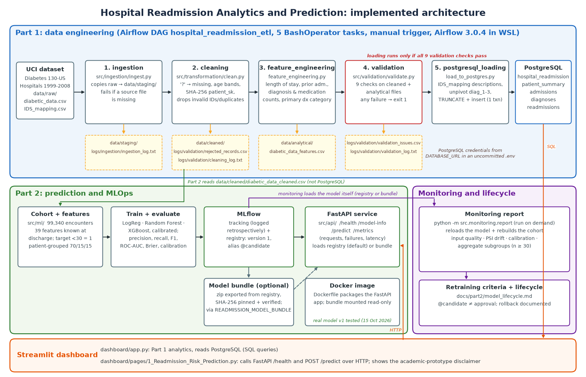
docs/architecture.png).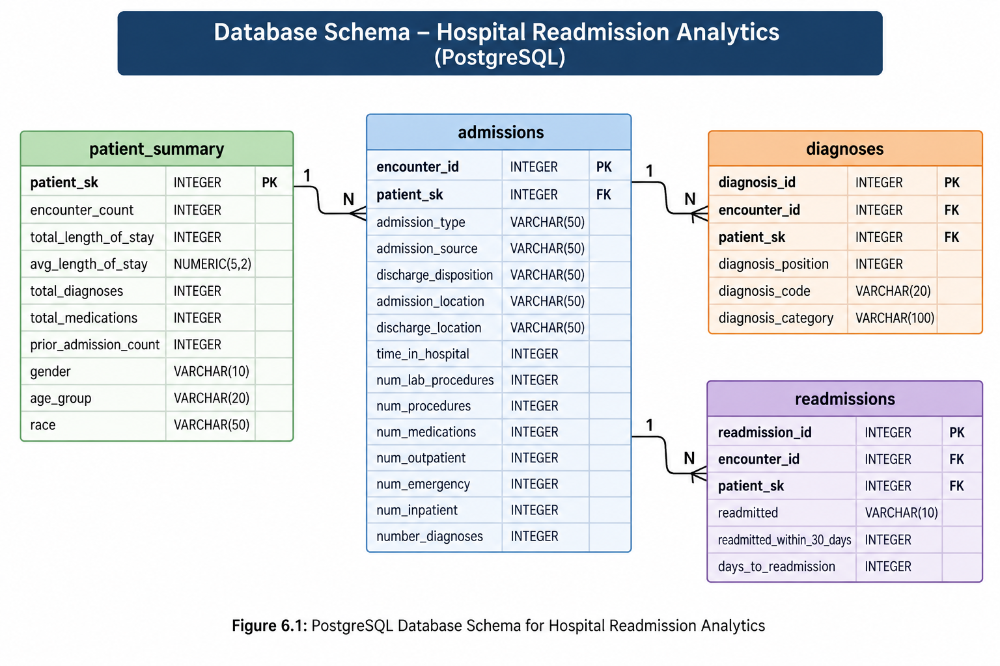
docs/Schema_Diagram.png).src/ingestion/ingest.py reads the raw CSV files with Pandas, keeps data/raw/ untouched, copies them to data/staging/ and writes logs/ingestion/ingestion_log.txt with the extraction time, source files, file status and row and column counts (101,766 rows, 50 columns). A missing source file stops the run with an explicit error, so Airflow marks the task failed.
? code is replaced by a true missing value; categorical blanks are standardised.[60-70) → 60-70), admission type, source and discharge codes mapped with IDS_mapping.csv, diagnosis codes grouped into categories, medication fields normalised, and the readmission label kept as <30, >30, NO with a 0/1 30-day indicator.encounter_ids removed; both go to the rejected-record log.patient_sk = first 16 hex characters of SHA-256 of the patient number (71,518 unique keys, 0 duplicates).src/transformation/feature_engineering.py).src/validation/validate.py runs ten checks: required identifiers, duplicate encounters, remaining special codes, valid readmission categories, length-of-stay range, prior-admission flag, diagnosis and medication counts, and matching cleaned and analytical row counts. Failures are written to logs/validation/rejected_records.csv and the run status to validation_log.txt. On the current data the status is PASSED with 0 rejected records. Validation rules are documented in the Validation Rules sheet of docs/data_dictionary.xlsx.
sql/schema.sql defines the mart in database hospital_readmission, loaded by src/loading/load_to_postgres.py using DATABASE_URL from an uncommitted .env file.
| Table | Grain | Rows (verified 15 Oct 2026) |
|---|---|---|
admissions | one row per encounter: admission, stay and discharge attributes | 101,766 |
diagnoses | one row per encounter diagnosis (up to 3) | 303,496 |
patient_summary | one row per surrogate patient: encounter and readmission totals | 71,518 |
readmissions | one row per encounter: readmission status and 30-day flag | 101,766 |
The Airflow 3.0.4 DAG hospital_readmission_etl (dags/hospital_readmission_dag.py, running in WSL) chains ingestion → cleaning → feature engineering → validation → PostgreSQL loading with BashOperator tasks; it is triggered manually and can be re-run at any time. Airflow's run history records a successful end-to-end run on 6 September 2026 (Figure 4). The 30-day readmission rate in the mart is 11.16% (11,357 encounters).
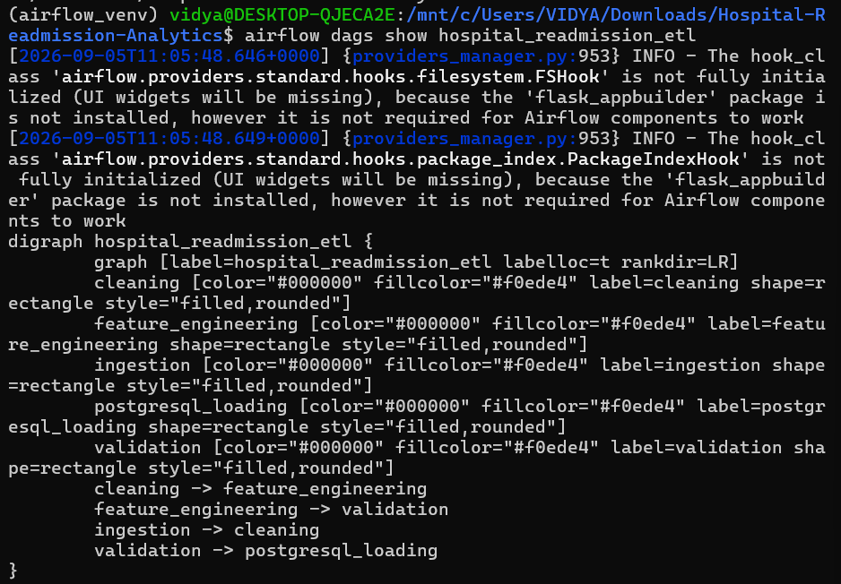
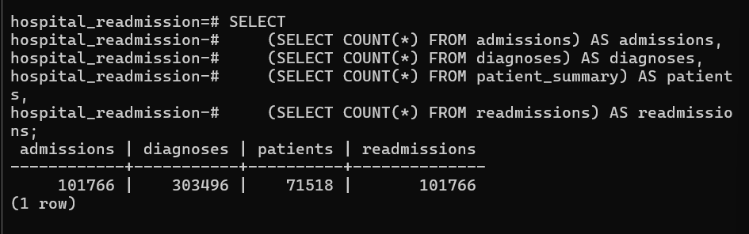
The Streamlit dashboard (dashboard/app.py) reads directly from PostgreSQL. It shows three headline indicators (101,766 encounters, 11.16% 30-day readmission rate, 4.40 days average stay) and six charts, each with its underlying data: readmission rate by age group, by diagnosis category and by prior admission history, average length of stay by readmission status, admission type distribution, and the top 10 discharge dispositions. The prior-admission view identifies the main high-risk cohort: in the cleaned data the 30-day readmission rate rises from 8.4% for patients with no inpatient visit in the previous year to 12.9%, 17.4% and 25.7% for one, two and three or more visits. Prior inpatient visits later turn out to be the Part 2 model's most important input. A dedicated high-risk cohort page was not built in Part 1; in Part 2 the prediction page (section 9) fills this role for individual made-up encounters.
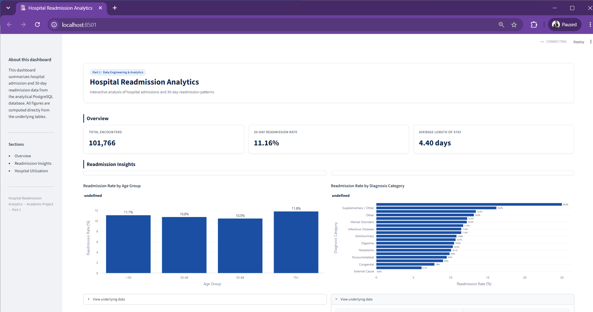
src/ml/config.py.weight (97% missing) and every patient_summary column (which aggregates later encounters) are excluded. Preprocessing (imputation, scaling, one-hot encoding with rare-category grouping) is fitted on training data only, and tests check this.45788b05…a941) is checked before every training and monitoring run.Each model is a scikit-learn pipeline tuned with patient-grouped 5-fold cross-validation on the training split, then calibrated with sigmoid (Platt) scaling using out-of-fold training predictions, because class weighting inflated raw probabilities (mean 0.43–0.47 against a 0.116 base rate). The decision threshold maximises F1 on validation. A selection rule fixed in advance keeps models within 0.01 of the best validation ROC-AUC and PR-AUC and within 0.002 of the best Brier score, then picks the simplest. The test split was used once, for the selected model only.
| Validation (14,901 encounters, 1,722 positives) | Logistic Regression | Random Forest | XGBoost |
|---|---|---|---|
| ROC-AUC | 0.6618 | 0.6673 | 0.6682 |
| PR-AUC (base rate 0.116) | 0.2139 | 0.2192 | 0.2271 |
| Brier score / ECE (calibration) | 0.0984 / 0.0099 | 0.0979 / 0.0070 | 0.0976 / 0.0056 |
| Threshold (max F1) | 0.1349 | 0.1618 | 0.1532 |
| Precision / recall / F1 at threshold | 0.211 / 0.412 / 0.279 | 0.223 / 0.398 / 0.286 | 0.223 / 0.411 / 0.289 |
Selection: Random Forest and XGBoost both met the tolerances; the rule chose the simpler Random Forest (200 trees, depth 16, minimum leaf 10, balanced_subsample) although XGBoost is slightly better on most metrics. Held-out test result (14,901 encounters, 1,704 positives): ROC-AUC 0.6715, PR-AUC 0.2237, Brier 0.0967, ECE 0.0046; at threshold 0.1618, precision 0.213, recall 0.381, F1 0.273 (TN 10,794, FP 2,403, FN 1,054, TP 650). The model flags about one encounter in five and catches about 38% of real 30-day readmissions: useful for ranking, but modest.
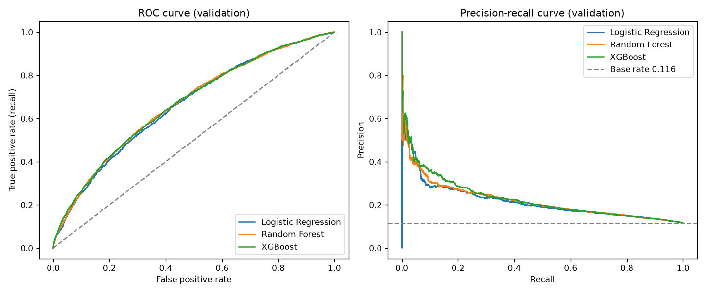
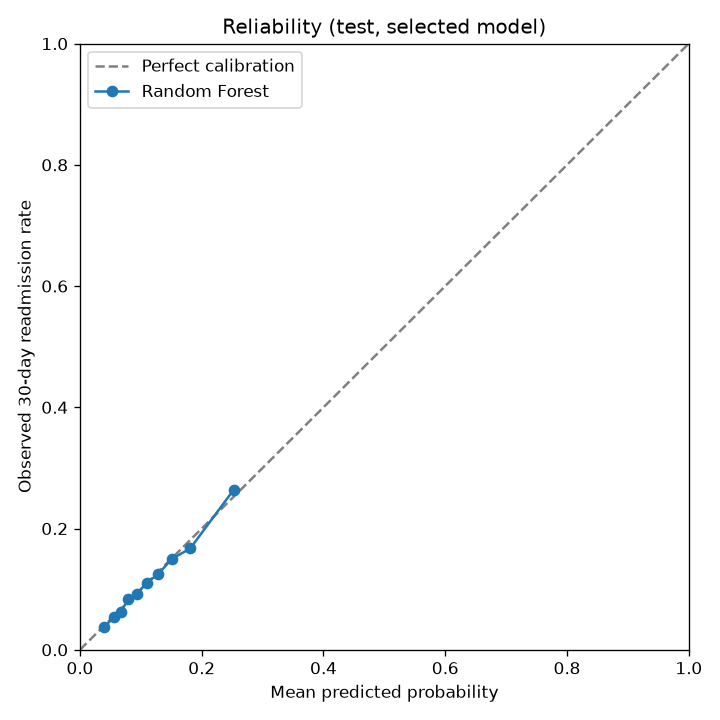
Fairness (test, threshold 0.1618): ROC-AUC is similar for women and men (0.671 / 0.672), lower for patients aged 70+ (0.635 vs 0.729 under 50), and 0.673 / 0.654 / 0.784 for Caucasian / African American / Hispanic patients; groups with fewer than 30 positives are suppressed. Explainability: permutation importance (drop in ROC-AUC when an input is shuffled) ranks prior inpatient visits (0.058) and discharge disposition (0.037) far above all other inputs (each < 0.01). SHAP was not used: it is not installed and, for this calibrated pipeline, would explain encoded columns rather than the 39 inputs. Importance shows association, not cause.
MLflow 3.17.1 uses a local SQLite store (mlflow.db) and artifact folder (mlartifacts/), both gitignored. Experiment hospital-readmission-30d holds a comparison parent run with child runs for each model's validation results and the selected model's test results (parameters, CV and validation metrics including Brier and ECE, thresholds, confusion matrices, plots and tables), plus a registration run. The saved Random Forest is registered as hospital-readmission-30d-classifier version 1, stored in the pickle-free skops format, with tags for threshold, model SHA-256, split fingerprint and provenance, and the alias @candidate.
historical_phase3_results, retrained=false); the training script itself does not call MLflow, and individual tuning trials are not logged as runs. The history was deliberately not regenerated.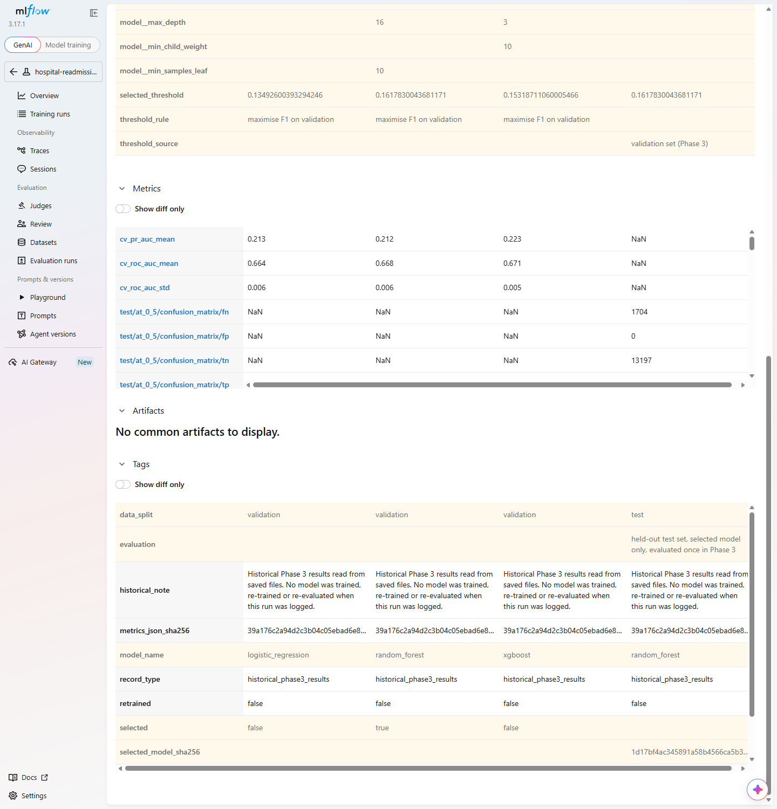
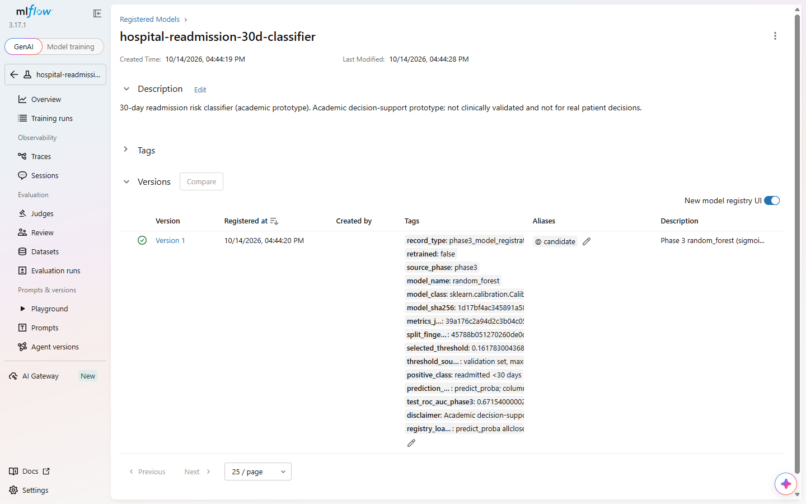
@candidate.API (src/api/): GET /health, GET /model-info, POST /predict and GET /metrics. At start-up the API resolves @candidate and refuses to serve (HTTP 503) unless the version is READY, skops-serialised, has the exact 39-input signature, the expected threshold and the pinned model hashes. Requests are validated strictly (types, ranges, allowed categories; extra fields such as race or identifiers are rejected with HTTP 422 without echoing values). Responses return the probability, the high-risk flag, the threshold, the model version and the disclaimer. Request bodies are never logged.
Docker: the Dockerfile (Python 3.11 slim, non-root user, health check) contains code and dependencies only; the model is mounted read-only as a bundle exported from the registry. Because the MLflow store holds absolute local paths, the registered version is exported once to model_bundle/ with a manifest of file hashes, and can be packed into a reproducible zip (model_bundle_v1.zip, SHA-256 5993ef3a…1b04) so that a fresh clone can serve the exact registered model (docs/part2/model_bundle.md). A fresh clone without any MLflow store served the unzipped bundle and passed the smoke test (health 200, model-info 200, predict 200, extra field 422).
Dashboard integration: a separate page, dashboard/pages/1_Readmission_Risk_Prediction.py, collects the 39 inputs (no race or payer; expired and hospice codes not offered), calls the API and shows the probability, risk group and threshold with the disclaimer. Part 1's page is unchanged. With made-up inputs, Scenario A (form defaults) gives 9.2%, "Lower risk"; Scenario B (4 prior inpatient visits, discharged to a skilled nursing facility) gives 31.6%, "Higher risk"; with the API stopped the page shows a clear message instead of failing.
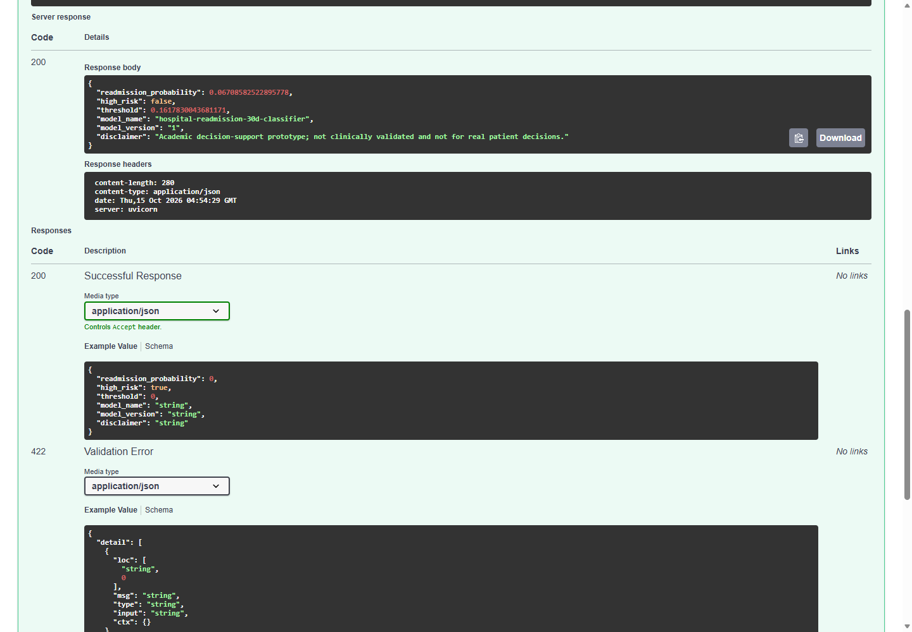
POST /predict response (HTTP 200).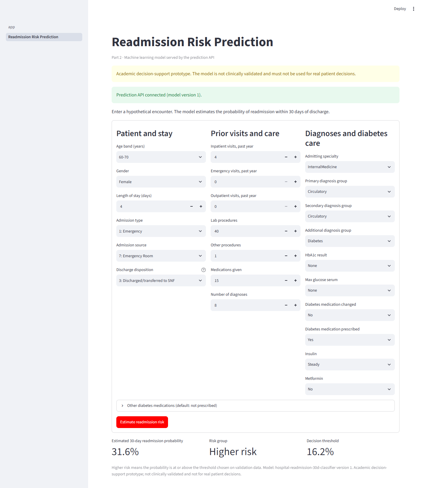
| Aspect | Implementation (src/monitoring/, src/api/telemetry.py) | Result on the held-out test batch |
|---|---|---|
| Input-data quality | API rejects each invalid request (422); the report counts missing and invalid values per input per batch with the API's own rules; a batch fails above 1% in any input | 0 missing, 0 invalid: passed |
| Data drift | Population Stability Index per input against the training split (10 quantile bins; unseen categories counted); 0.10 moderate, 0.25 significant | No input above 0.25 |
| Prediction drift | PSI of predicted probabilities against validation | 0.0021 (stable) |
| Performance and calibration | ROC-AUC, PR-AUC, Brier, ECE, precision/recall/F1 and flagged share when labels are available | ROC-AUC 0.6715, ECE 0.0046 |
| Subgroups | Metrics by gender, age group and race, aggregate only, groups under 30 suppressed | Lower ranking for age 70+ |
| Latency and failures | /metrics: request counts by status, failure rate, p50/p95 latency, prediction distribution, no input values | Shown live in the demo |
Real and simulated batches are judged separately. Two clearly labelled simulated batches (test rows with age +10 years, +2 prior inpatient visits, +2 days stay) show that the checks react: prediction PSI above 2.0, ECE 0.057–0.079 and drift on the three shifted inputs. Implemented vs documented: the checks, report and /metrics are implemented and tested; they run on demand. There is no continuously running production monitoring, alerting or persistent metric store (telemetry is in memory and resets on restart).
Retraining is recommended (for a person to act on; nothing retrains automatically) when: PSI > 0.25 on one of the 10 most important inputs in two consecutive batches; prediction PSI > 0.25; ROC-AUC more than 0.05 below the validation reference; ECE above 0.03; or the flagged share changes by more than 0.10. A subgroup ROC-AUC more than 0.10 below the overall triggers a fairness review, and a failed input-quality check sends the batch back to the data pipeline first. New labelled data or a change in the Part 1 data are also reasons to retrain. On the real test batch no criterion is met; on the simulated batches retraining is recommended, as intended.
The lifecycle (docs/part2/model_lifecycle.md): prepare data → train and select → log and register a new version with @candidate → approval by a named reviewer (recorded as version tags and an @approved alias) → release (update the pinned hashes in a reviewed change, export and archive the bundle) → serve → monitor → retrain as a new version. Versions are never overwritten, so rollback means moving the alias back, restoring the previous pinned hashes and redeploying that version's archived bundle. Important distinction: @candidate means "selected and verified", not "approved". Version 1 has not been approved for any use, consistent with its status as an academic prototype.
The repository contains automated tests for target construction, cohort rules, leakage checks, the patient-grouped split and its fingerprint, preprocessing, training and selection, metrics, MLflow logging and registry, API validation and failure handling, bundle integrity, the Docker configuration, telemetry, monitoring and input quality, and the dashboard page. On 15 October 2026 the full suite was run once on the final code (all Part 2 changes combined, with the real MLflow store present): 240 passed, 0 failed, 0 skipped in 9 minutes. Part 1 was also re-run end to end (ingestion, cleaning, feature engineering, validation) in a fresh clone: the staged, cleaned and analytical files were identical in content to the committed ones and validation PASSED. All seeds are 42; the full XGBoost run differed by about 1e-3 between two machines, so results are reproducible per environment rather than bit-for-bit across platforms.
The project delivers a reproducible, documented pipeline from a public de-identified dataset to an analytical PostgreSQL mart and dashboard, and extends it into an end-to-end MLOps prototype: leakage-aware features, a patient-grouped split, a fair comparison of three calibrated models, MLflow tracking and a versioned registry entry, a verified FastAPI service with a Docker image, dashboard integration, monitoring of input quality, drift, calibration, subgroups, latency and failures, and explicit retraining and lifecycle rules. The model's predictive performance is modest and it is suitable only as an academic decision-support demonstration, not for clinical use.
Reference. Strack, B., DeShazo, J. P., Gennings, C., Olmo, J. L., Ventura, S., Cios, K. J., & Clore, J. N. (2014). Impact of HbA1c measurement on hospital readmission rates: analysis of 70,000 clinical database patient records. BioMed Research International, 2014, 781670. Dataset: UCI Machine Learning Repository, Diabetes 130-US Hospitals for Years 1999–2008, doi:10.24432/C5230J.